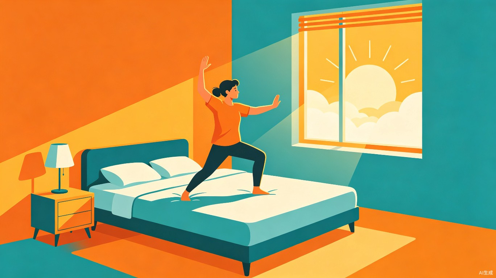
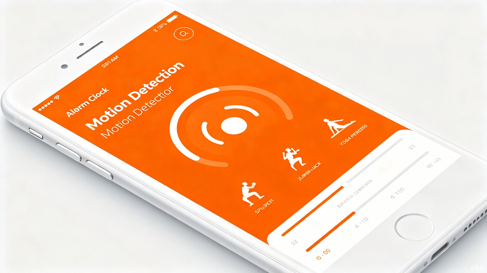

动醒是一款革命性的手机闹钟 App，它彻底改变了传统闹钟"一按即关"的软弱模式。当设定时间到达后，闹钟会持续高强度响铃，用户必须完成指定数量的身体动作（如八段锦、深蹲、开合跳等），通过动作识别验证后，闹钟才会停止。
这一设计同时击穿了两大痛点：赖床睡过头，以及"明天一定运动"的无限拖延。让用户在每天清晨被迫完成一组运动，既解决了起床问题，又养成了运动习惯，实现一举两得。
通过手机摄像头实时识别用户动作，精准判断八段锦、深蹲、开合跳等标准动作是否完成到位。
到达时间后铃声持续增强，音量不可调低，关闭按钮完全隐藏，除非完成动作否则无法停止。
用户可选择八段锦、瑜伽、深蹲、平板支撑等多种动作组合，难度和数量自由配置。
记录每日起床时间、完成动作类型与数量，生成周/月健康报告，见证习惯养成。

闹钟响铃时的动作识别界面，用户需跟随引导完成指定动作
设了五个闹钟却还是迟到的上班族和学生党，动醒让他们必须离开床铺、活动身体，彻底告别"再睡五分钟"。
办了健身卡却常年闲置，收藏了上百个运动视频却从未跟练。动醒把运动变成每天第一道"强制程序"。
希望通过晨练八段锦、太极等传统养生运动开启一天，但缺乏坚持的动力和提醒。
正在培养早起习惯的用户，需要一个强有力的外部约束工具来度过习惯养成的最难前21天。
清晨 7:00，闹钟准时响起。铃声渐强，屏幕显示"完成 10 个深蹲以关闭闹钟"。用户无奈起身，对着手机摄像头完成动作。AI 识别通过后铃声停止，用户已然清醒，身体也已活动开。这时 App 弹出一句话："你已经完成了今天的第一个目标，要不要再来一组八段锦？"——于是，运动习惯在不知不觉中生根发芽。
效率提升角度：动醒将"起床"与"运动"两个耗时环节合并为一次动作，用户无需额外安排运动时间，在每天清晨被动完成基础运动量，极大提升了时间管理效率。
社会价值角度：帮助大量年轻人建立规律的作息和运动习惯，改善亚健康状态，减少因熬夜赖床导致的生物钟紊乱问题。长远来看，有助于提升全民健康素养，降低因缺乏运动导致的慢性病发病率。
动醒不仅是一个闹钟，更是一个改变生活方式的启动器。它用最硬核的规则，帮你做最温柔的事——照顾好自己的身体。